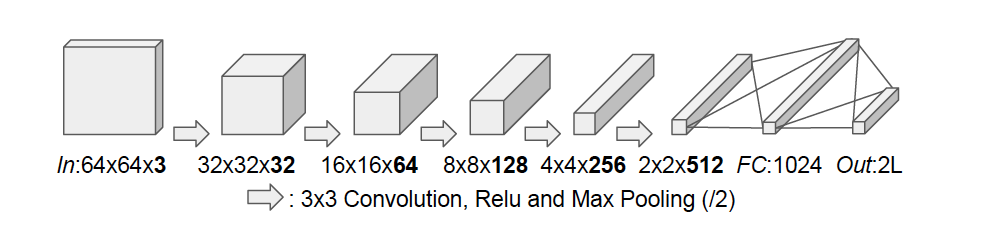
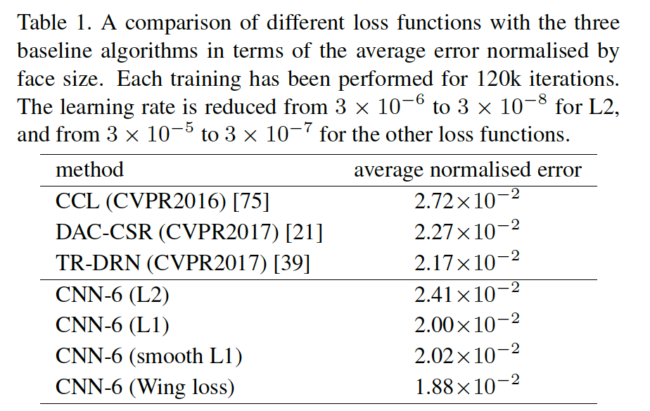
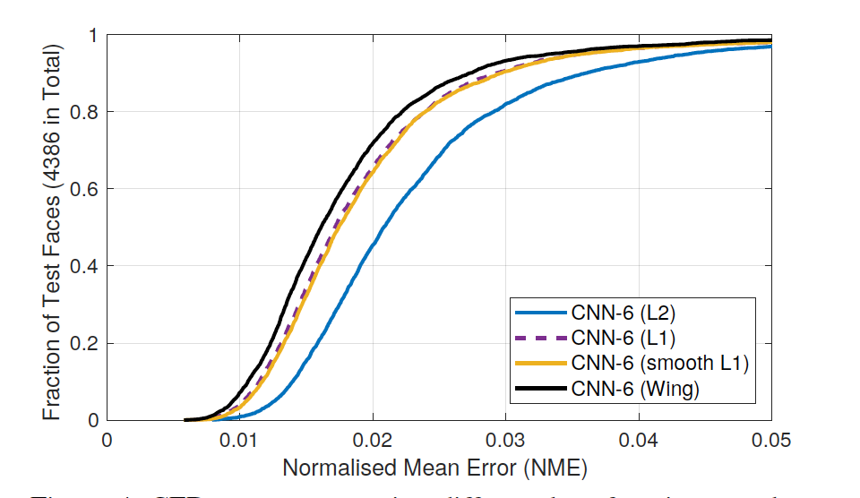
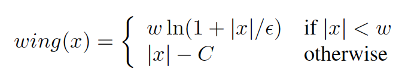
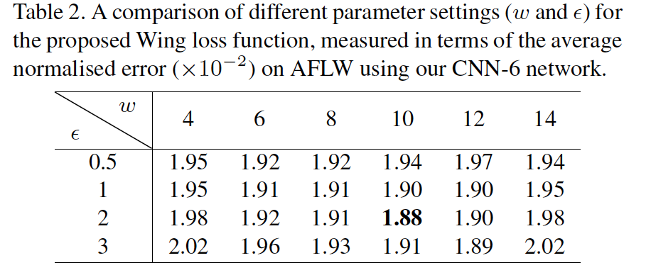
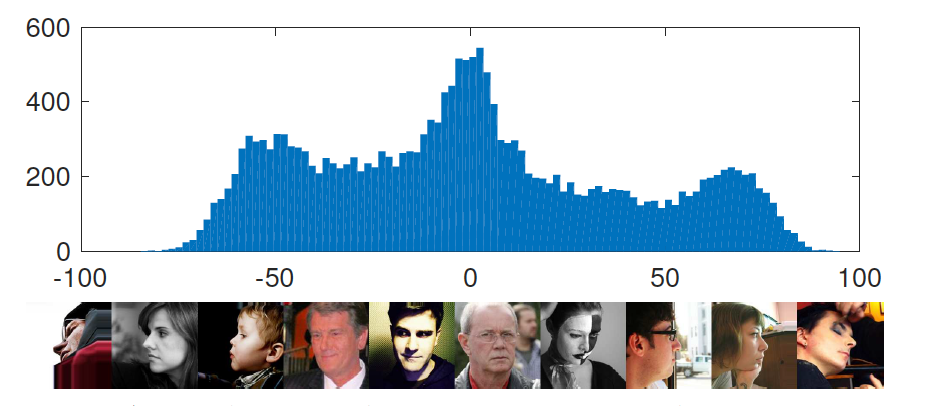
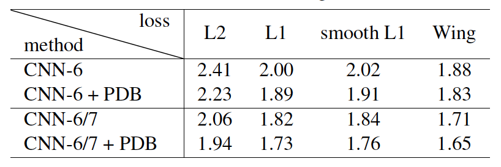
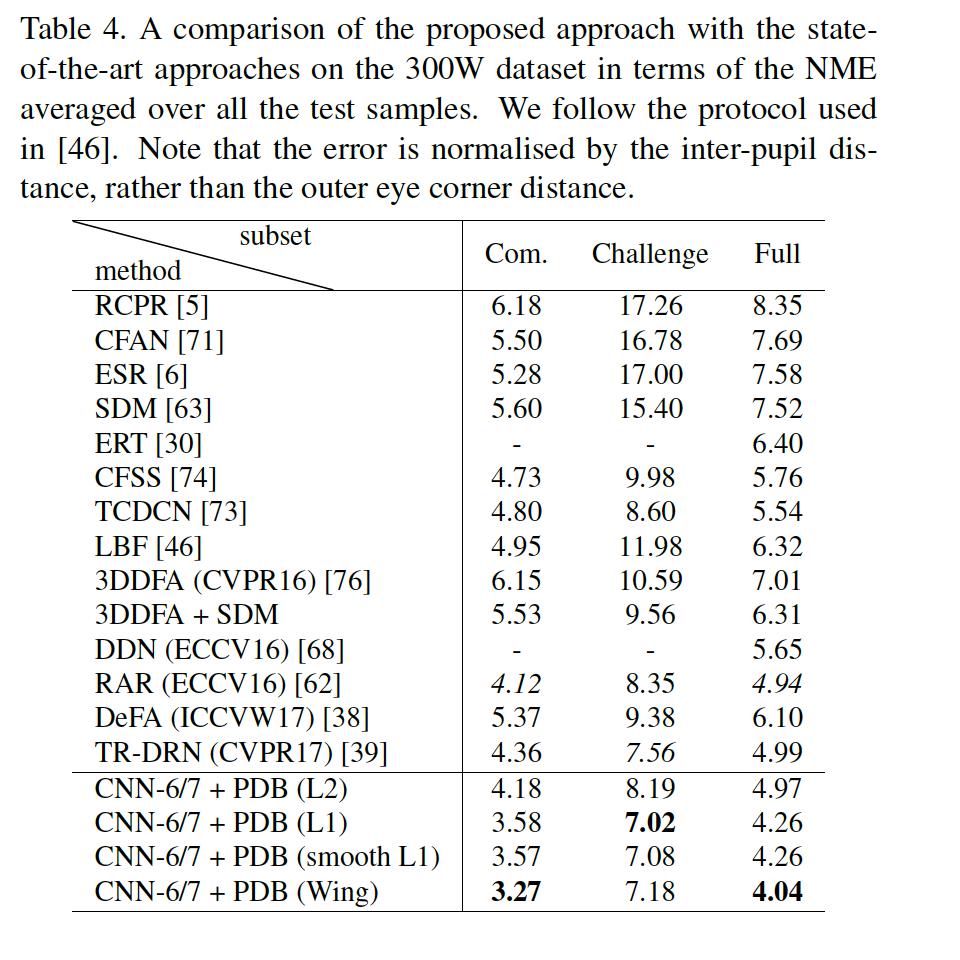

Wing Loss for Robust Facial Landmark Localisation with Convolutional Neural Networks
URL:https://arxiv.org/abs/1711.06753
CVPR2018一篇关于人脸Landmark的论文，这篇论文主要是关于人脸关键点的定位，因为论文的重点是loss function和data augmentation所以论文所实验的模型结构是比较简单的CNN结构来实验：

论文主要的研究内容：
- Wing Loss：论文首先通过实验直观的反映了常见的L1 Loss、L2 Loss、Smooth L1 Loss的优劣，通过分析不同损失函数的走势，作者认为landmark定位任务中需要更加重视中小范围误差的那些样本(small or medium range error)：


因此论文提出了wing loss损失函数，利用对数函数来增强小误差那些样本的表现，其中C是个常数 C = W - Wln(1 + W / e)，至于最终两个变量的取值只能一一尝试，论文也给出了具体的尝试，W = 10 , e = 2最终表现最好：

 - Pose-based data balancing：PDB主要用来解决大Pose表现不好的问题，作者认为 大 pose表现不好的根本原因是样本数据不均衡，因此提出了PDB的策略。论文首先利用Procrustes Analysis和PCA将数据集中不同的人脸转化到一维向量空间中用来分析样本pose的分布（具体操作逻辑还需要仔细看，论文说的比较少还不是很清楚），比如对于AFLW数据集可以得到下面的分布图，然后根据具体的样本分布对于那些占比比较小的pose类别通过基本的data augmentation方法来增加这类样本的数量(其实就是直接多复制几份这样的数据):
 - Two-stage landmark localisation：这一优化比较常见，利用cascade的逻辑讲landmark的定位分到两阶段CNN网络中，第一阶段就是上面提到的CNN-6，第二阶段则是CNN-7，与CNN-6的差别就是输入从64x64x3变到了128x128x3，增加了一层卷积层，卷积核的个数也略有增加，其他没有什么特殊的设计，最后cascade的逻辑和PDB数据增强带来的效果，CNN-6/7就代表two stage的模型：

